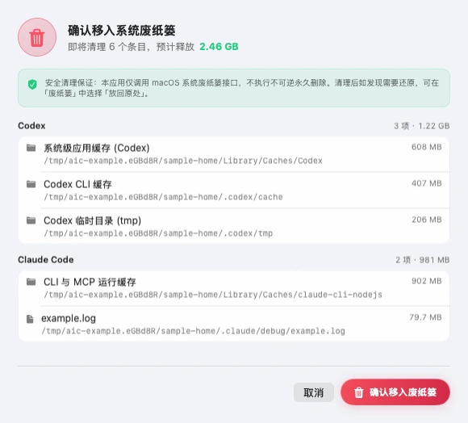

每一项，都有
清理建议。
扫描只读。结果按客户端整理，可搜索会话摘要和路径，也能按体积、时间或名称排序。
- 建议清理
- 缓存、临时日志，以及部分压缩归档或超过 14 天未活跃的会话。可批量勾选建议项。
- 按需清理
- 近期聊天、一次性任务目录、回滚快照和自定义目录。部分 JSONL 会话会显示项目名和首条提问摘要。
- 不建议清理
- 凭据、核心配置、记忆、插件、数据库和本地模型等高风险条目默认锁定。可解锁的条目须经两次风险确认。
应用在清理前再次校验路径，拦截系统目录、敏感隐私目录、受保护的客户端根目录和越界符号链接。
选好文件，
确认后再移走。
在确认窗口核对文件和大小。选中的文件会进入 macOS 系统废纸篓，清空前可用 Finder 的「放回原处」恢复。


支持的客户端
内置 31 套规则。各客户端的扫描范围取决于其规则和本机目录。
编程助手、桌面应用与本地模型工具
- Claude Code
- Codex
- Cursor
- Windsurf
- Claude Desktop
- ChatGPT Desktop
- OpenCode
- Pi
- Gemini / Antigravity
- Kiro
- GitHub Copilot
- Multica
- Cherry Studio
- AnythingLLM
- T3 Code
- Ollama
- LM Studio
- Chatbox
- Jan
- Zed
国内客户端与工作伙伴
- WorkBuddy
- 豆包工作伙伴 / 豆包
- WorkDaddy
- DeepSeek Harness
- Trae / Trae CN
- Qoder
- 通义灵码
- ZCode / 智谱清言
- 阶跃星辰
- Kimi
- 腾讯元宝
git clone https://github.com/qiyuanjuzheng/ai-cleaner.git
cd ai-cleaner
./scripts/package-app.sh
open "dist/AI Cleaner.app"